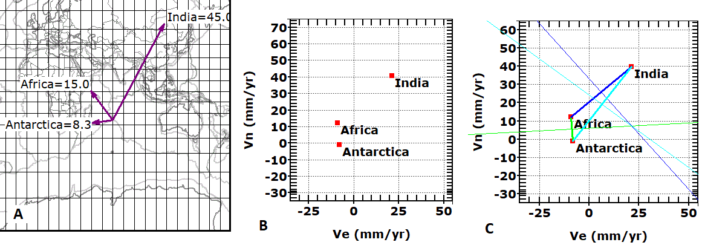

Analyze Triple Junctions
 |
| A. The
values on the map are absolute motions in whatever
reference frame the plate model uses. You must now convert them to relative motions for each of the three plate-pairs at the triple junction. You can solve for the relative motions graphically or analytically, since they are vector additions. The memo box on the control form shows the magnitudes and directions if you want to work analytically. |
| B. You can get a velocity graph. |
| C. Triple junction velocity diagram. Velocity lines of the three ridges shown in
thin lines, which are the perpendicular bisectors of the velocity vector
for the motion between the pair of plates. The lines are
parallel to the trend of hte plate boundaries (ridges). For the AF-IN
and AN-IN pairs, this makes them perpendicular to the
lines connecting the plate velocities, but that cannot be
the case for the AF-AN pair (note from the plate motions
and the orientation of the boundary that this spreading
must be at an oblique angle, which is reasonable given
the orientation of the three ridges where they come
together, and is also apparent if you look at the bathymetry in the
region. Because the three lines intersect in a point, the triple junction is stable. The triple junction is moving relative to the three plates (they are each spreading away from the triple junction). |
Additional analysis of this triple junction:
Gulf of California triple junction analysis.
Additional references:
Last revision 2/19/2019